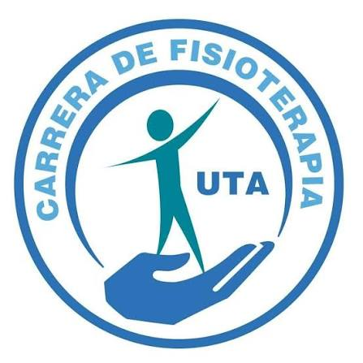

Tutor de estudio sobre comunicación, herramientas colaborativas, búsqueda científica, hojas de cálculo y contenidos multimedia con IA aplicados a la Fisioterapia.

Toca una ficha para ver la definición. Úsalas para repasar antes de un taller o de una evaluación.